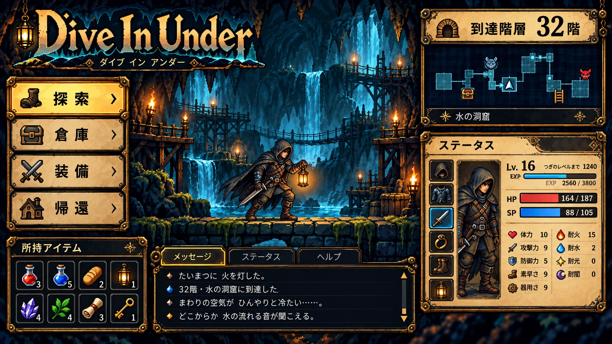
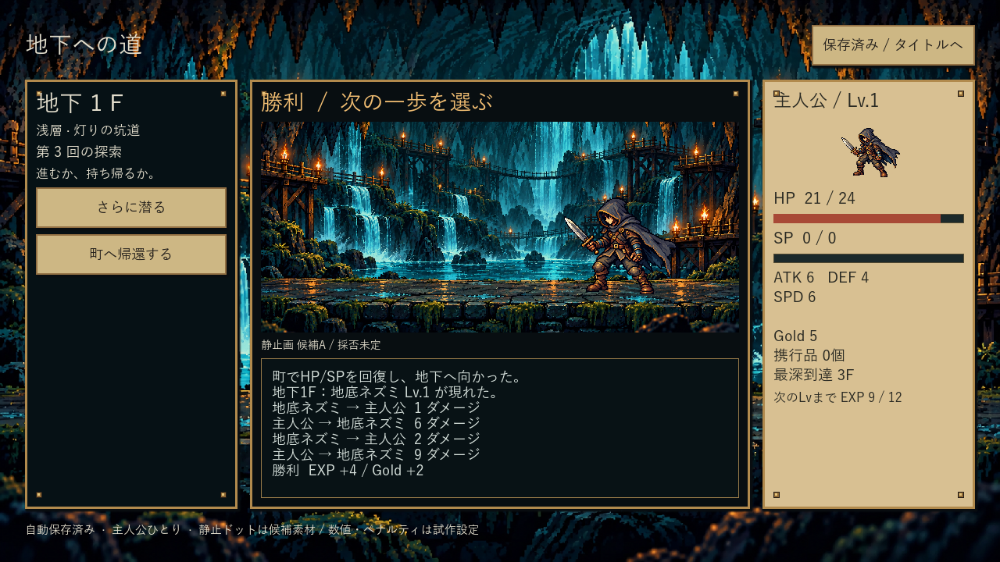

Dive In Under — 静止画像候補A
0.4.1 / 187e7f7 / Godot 4.7.2 / Windows x64
5点は現時点の基準として採用済み。工程1全体は未完了です。主人公・E04・B10は独立した透過静止画像。残る敵は仮表示です。背景・人物・実UIは分離し、モーションは追加していません。参考との比較は続けますが、5点は現基準として採用済みです。
入口：C:\Users\masat\Documents\codex_test\projects\Dive In Under\確認入口.lnk → Play.cmd / index.html。起動中の旧EXEは維持し、次回起動先だけを検証済み版へ切替。
町の能力値の読みやすさ修正
不透明な濃色パネルを追加し21pxで表示。修正前0.4 / 修正後0.4.1 / 画像SHA。11部位・再出発ボタンの収まりを1280×720で確認。羊皮紙・真鍮の素材感と装備UIはPX参考より簡素で、残課題です。5点は現基準として採用済み。EXE内注記は採用通知前の収録。
実際のWindows EXE
参考PXと実EXEの比較
左：参考画像。右：候補版の実画面。参考画像自体はゲームの背景に使用していません。
探索

参考PX
候補A 実EXE戦闘
 参考PX候補A 実EXE
参考PX候補A 実EXEステータス／装備
| 部分 | 候補Aで実装 | 残り／判断 |
|---|
| 背景 | 独立洞窟PNG、浅中深層の静的色調、10F門 | 現基準として採用・継続改善 |
| 人物・敵 | 主人公/E04/B10、左右の向き、足元、nearest | 絵柄・縮小後の輪郭の採否、残る敵 |
| UI | 羊皮紙／真鍮、HP/SP、ログ、装備・倉庫の実操作 | 参考との密度・装飾差の節目評価 |
回帰確認
既存366チェック成功、1000seedの全記録・指標が厳密一致。290操作・途中と突破後の保存再開を非対話Stationの実EXEで確認。通常デスクトップへの自動操作なし。OS物理入力・他解像度・長時間試遊は未検証。
1000seed比較 / 実EXE操作 / 素材配置 / 配布SHA / 全受入項目と未達